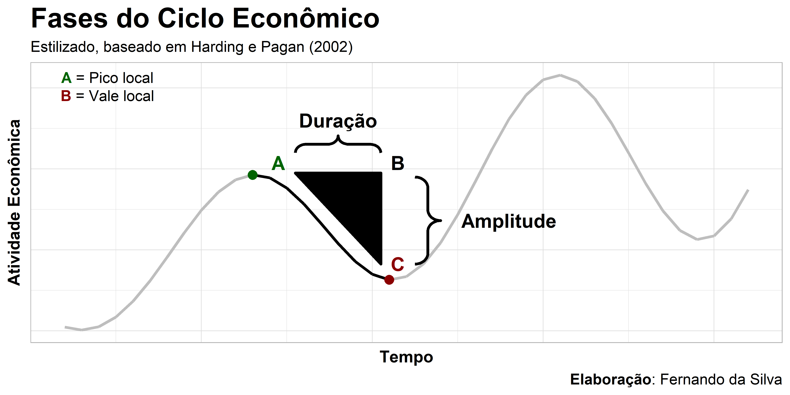
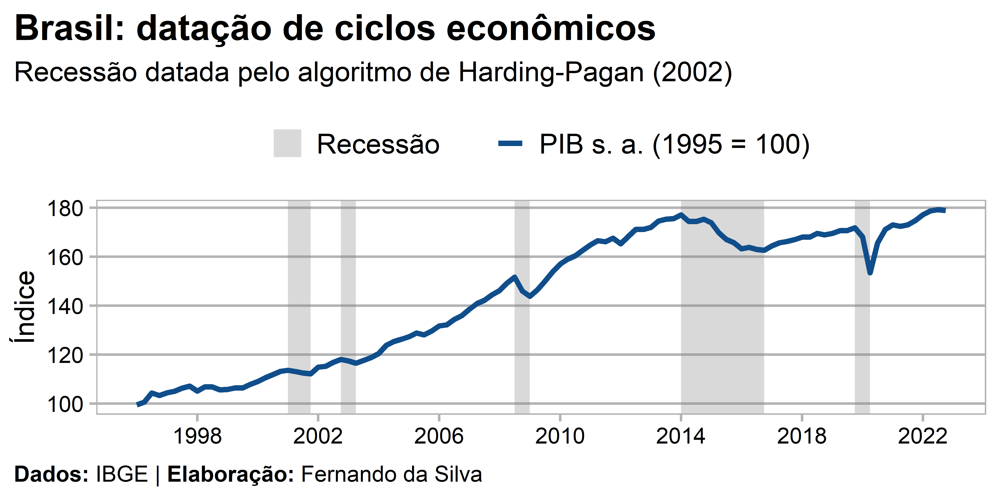
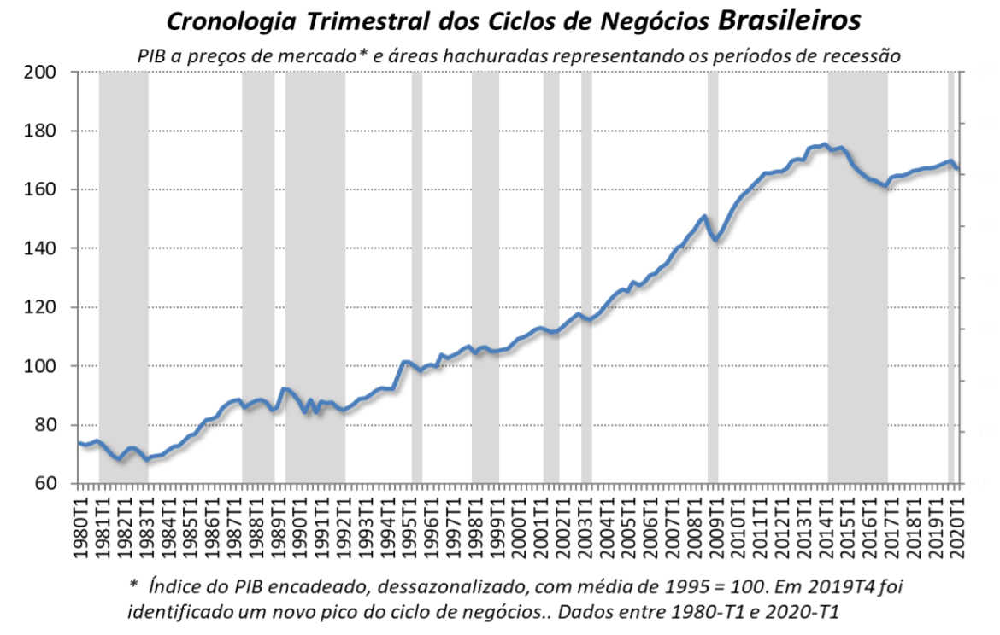

Ao longo do tempo a economia apresenta o que se chama de ciclos econômicos, ou seja, períodos de expansão e recessão. Mas de que forma podemos saber em qual ponto do ciclo econômico a economia se encontra? Como sabemos se a economia está em recessão? Estas são perguntas de grande interesse para acadêmicos e profissionais da área, e neste breve exercício demonstramos como replicar a datação de ciclos econômicos que instituições como NBER (EUA) e CODACE (Brasil) tradicionalmente publicam.
A importância de datar o ciclo econômico
O ciclo econômico desempenha um papel importante para as decisões de política econômica e de empresas. Por exemplo, quando a economia está com hiato negativo, as empresas tendem a agir de forma mais conservadora. Em contrapartida, quando a economia está com hiato positivo, as empresas tendem a agir de forma mais agressiva com o objetivo de aumentar sua participação de mercado.
A teoria do ciclos econômicos sugere que o ciclo econômico é um importante indicador para a política monetária, possibilitando a atuação do Banco Central para estabilizar as flutuações da economia. Portanto, a datação precisa do ciclo econômico pode ser fundamental para decisões políticas eficientes e práticas.
No Brasil o responsável pela datação do ciclo econômico é o Comitê de Datação de Ciclos Econômicos (CODACE), que se reúne periódicamente e publica um informativo contendo as datas dos períodos de expansão e recessão.
Características do ciclo econômico
Há diveros trabalhos que investigam a questão da datação de ciclos econômicos, aqui exploraremos apenas uma das abordagens. O procedimento completo é descrito em Harding e Pagan (2002) e é largamente utilizado em diversos países. Em resumo, os autores seguem a definição de Burns e Mitchell (1946) sobre ciclo econômico e propõem um método que entrega uma visualização gráfica do ciclo.
Existem algumas características interessantes sobre as fases do ciclo econômico (fatos estilizados):
- Pico (A): é o ponto de virada quando a expansão transita para a fase de recessão;
- Vale (C): é o ponto de virada quando a recessão transita para a fase de expansão/recuperação;
- Duração (AB): é o número de trimestres entre o pico e o vale;
- Amplitude (BC): é a distância entre o pico e o vale ou altura do triângulo.
A imagem acima ilustra didaticamente estas características.
O algoritmo de Harding e Pagan (2002)
Partindo de uma série \(Y_t\) em frequência trimestral, representativa da atividade econômica (PIB) e usualmente transformada como \(y_t = ln(Y_t)\), a datação do ciclo econômico deve compreender as seguintes etapas:
- Determinação de um conjunto potencial de pontos de virada, ou seja, os picos e vales em uma série \(y_t\);
- Um procedimento para garantir que os picos e os vales se alternem;
- Um conjunto de regras que recombinam os pontos de virada estabelecidos após os passos 1) e 2) para satisfazer critérios pré-determinados relativos à duração e amplitude das fases e ciclos completos (isso é chamado de “regras de censura”).
Conforme Harding e Pagan (2002), os pontos de virada da série acontecem quando:
\[\begin{align*} \text{Pico na observação } t \text{, se: } & \left[(y_{t-k}, y_{t-1}) < y_t > (y_{t+1}, y_{t+k}) \right] \\ \text{Vale na observação } t \text{, se: } & \left[(y_{t-k}, y_{t-1}) > y_t < (y_{t+1}, y_{t+k}) \right] \end{align*}\]
O usual e recomendado pelos autores, para séries trimestrais, é definir \(k = 2\) para encontrar esses pontos máximos e mínimos locais.
Em seguida, define-se as fases de expansão, recessão e o ciclo completo:
- Recessão: o período compreendido entre um pico e um vale;
- Expansão: o período compreendido entre um vale e um pico;
- Ciclo completo: pode ser mensurado como a duração das fases de recessão e expansão somadas.
Para tal, é necessário impor algumas “regras de censura”, que são restrições adicionais para eliminar/manter os pontos de virada identificados. Isso passa por definir uma duração mínima das fases de recessão/expansão entre picos/vales, geralmente utilizando-se 2 trimestres (inspirado no NBER). Além disso, restringe-se também a duração mínima do ciclo completo como 5 trimestres.
Em resumo:
- Recessão/Expansão: duram, no mínimo, 2 trimestres;
- Ciclo completo: dura, no mínimo, 5 trimestres.
O método é bastante simples e poderoso, conseguindo praticamente replicar a cronologia de recessões desenvolvidas pelas instituições mencionadas acima.
Datação do ciclo econômico do Brasil
Agora passemos a aplicação do procedimento de datação do ciclo econômico, conforme Harding e Pagan (2002), exemplificando para a série trimestral do PIB brasileiro (série encadeada, ajustada sazonalmente).
Pacotes
Para aplicar o algoritmo utilizaremos o pacote {BCDating} na linguagem R, criado por Majid Einian (Central Bank of Islamic Republic of Iran) e Franck Arnaud (National Institute of Statistics and Economic Studies, France). Outros pacotes são utilizados para coleta, tratamento e visualização de dados:
Dados
Neste exercício utilizaremos a série do PIB a preços de mercado (série encadeada do índice de volume trimestral com ajuste sazonal, média de 1995 = 100), disponível no SIDRA/IBGE. Para coletar os dados via API pode-se usar o pacote sidrar, especificando o código de coleta. Além disso realizamos a preparação dos dados para utilização posterior:
Code
# A tibble: 6 × 2
date value
<date> <dbl>
1 2021-07-01 173.
2 2021-10-01 175.
3 2022-01-01 177.
4 2022-04-01 179.
5 2022-07-01 179.
6 2022-10-01 179.Datação
Para aplicar o algoritmo e obter as datações de ciclo de negócios, primeiro transformamos o objeto pro formato de série temporal e, em seguida, utilizamos a função BBQ() do pacote {BCDating}. Optamos por deixar com os valores predefinidos os demais argumentos da função, que servem para definir os valores mínimos de duração do ciclo (pico ao pico ou vale ao vale) e da fase do ciclo (pico ao vale ou vale ao pico).
Code
[1] "BCDating"
attr(,"package")
[1] "BCDating"Resultados
Como pode ser visto abaixo, o objeto retornado traz como resultado as datas (trimestres) de picos e vales, assim como a duração do ciclo.
Peaks Troughs Duration
1 2001Q1 2001Q4 3
2 2002Q4 2003Q2 2
3 2008Q3 2009Q1 2
4 2014Q1 2016Q4 11
5 2019Q4 2020Q2 2Outras informações podem ser obtidas com a função summary():
Phase ]Start ;End] Duration LevStart LevEnd Amplitude
1 Expansion <NA> 2001Q1 NA NA 114 NA
2 Recession 2001Q1 2001Q4 3 114 112 1.5
3 Expansion 2001Q4 2002Q4 4 112 118 5.8
4 Recession 2002Q4 2003Q2 2 118 116 1.5
5 Expansion 2003Q2 2008Q3 21 116 152 35.1
6 Recession 2008Q3 2009Q1 2 152 144 7.8
7 Expansion 2009Q1 2014Q1 20 144 177 33.2
8 Recession 2014Q1 2016Q4 11 177 163 14.4
9 Expansion 2016Q4 2019Q4 12 163 172 9.2
10 Recession 2019Q4 2020Q2 2 172 153 18.4
11 Expansion 2020Q2 <NA> NA 153 NA NA
Amplitude Duration
Exp=]T;P] 20.8 14.2
Rec=]P;T] 8.7 4.0Porém, o mais interessante é avaliar o resultado visualmente através de um gráfico. Para tal, fazemos um tratamento dos dados retornados pela função BBQ() e utilizamos o ggplot2 para gerar o gráfico com as áreas sombreadas referente às datas de recessão que foram identificadas pelo algoritmo, acompanhadas do comportamento do PIB no período:
Code
# Transformar resultados em tibble
bc_dates_tbl <- purrr::quietly(show)(bc_dates)$result |>
dplyr::as_tibble() |>
dplyr::mutate(
`Peaks` = lubridate::yq(`Peaks`),
`Troughs` = lubridate::yq(`Troughs`)
)
# Gerar gráfico
g1 <- ggplot2::ggplot() +
ggplot2::geom_rect(
data = bc_dates_tbl,
mapping = ggplot2::aes(
xmin = `Peaks`, xmax = `Troughs`, ymin = -Inf, ymax = Inf,
fill = "Recessão"
),
alpha = 0.3
) +
ggplot2::geom_line(
data = pib,
mapping = ggplot2::aes(x = date, y = value, colour = "PIB s. a. (1995 = 100)"),
size = 1.5
) +
ggplot2::scale_colour_manual(values = "dodgerblue4") +
ggplot2::scale_fill_manual(values = "grey50") +
ggplot2::scale_x_date(date_breaks = "4 years", date_labels = "%Y") +
ggplot2::labs(
title = "Brasil: datação de ciclos econômicos",
subtitle = "Recessão datada pelo algoritmo de Harding-Pagan (2002)",
y = "Índice",
x = NULL,
color = NULL,
fill = NULL,
caption = "**Dados:** IBGE | **Elaboração:** Fernando da Silva"
) +
ggthemes::theme_calc(base_size = 16) +
ggplot2::theme(
plot.title = ggplot2::element_text(face = "bold"),
plot.title.position = "plot",
plot.caption.position = "plot",
plot.background = ggplot2::element_rect(colour = NA),
plot.caption = ggtext::element_textbox_simple(
margin = ggplot2::margin(10, 0, 0, 0)
),
legend.position = "top",
)
g1
Comparação com cronologia do CODACE/FGV
Por fim, vamos comparar os resultados aqui encontrados com a Cronologia de Ciclos de Negócios Brasileiros elaborada pelo CODACE. A última reunião do comitê foi em 29 de junho de 2020, na qual reportou a seguinte situação do ciclo de negócios:

Percebe-se que a série utilizada pelo comitê inicia-se em 1980, mas se analisarmos a partir de 1996 (período de início da série utilizada em nosso exercício), verificamos que 5 de 6 recessões datadas pelo CODACE são identificadas pelo algoritmo de Harding & Pagan (2002). Apenas a recessão do 1º trimestre de 1998 ao 1º trimestre de 1999 não foi detectada. Apesar disso, o resultado é empolgante!
Por fim, vamos comparar os resultados de ambas as datações mais a fundo na tabela a seguir, na qual contabilizamos o período de recessão partindo do trimestre imediatamente posterior ao pico até o subsequente vale:
Code
bc_dates_tbl |>
dplyr::mutate(
dplyr::across(
.cols = c("Peaks", "Troughs"), .fns = ~.x + months(3) # pois data de início não é inclusa
),
dplyr::across(
.cols = c("Peaks", "Troughs"),
.fns = ~paste0("T", lubridate::quarter(.x), "/", lubridate::year(.x))
)
) |>
tidyr::unite(col = "Período", c("Peaks", "Troughs"), sep = " - ") |>
dplyr::rename("Duração" = `Duration`) |>
dplyr::mutate(
`Período ` = c(
"T2/2001 - T4/2001",
"T1/2003 - T2/2003",
"T4/2008 - T1/2009",
"T2/2014 - T4/2016",
"T1/2020 - ?"
),
`Duração ` = c(3, 2, 2, 11, "?")
) |>
reactable::reactable(
theme = reactablefmtr::flatly(),
columnGroups = list(
reactable::colGroup(name = "Algoritmo H. & P.", columns = c("Período", "Duração")),
reactable::colGroup(name = "Cronologia CODACE", columns = c("Período ", "Duração "))
)
) |>
reactablefmtr::add_title(
title = "Datação de recessões - Ciclo de negócios do PIB brasileiro",
font_size = 20
) |>
reactablefmtr::add_source("Fonte: Fernando da Silva e CODACE.")Datação de recessões - Ciclo de negócios do PIB brasileiro
Fonte: Fernando da Silva e CODACE.
Perceba que ambas as datações são idênticas! A única diferença está na última datação, a qual o CODACE ainda não definiu o próximo vale. Dessa forma, fica demonstrado o poder e facilidade de uso do algoritmo de Harding & Pagan para datação de ciclos econômicos.
Referências
Burns, Arthur F. & Mitchell, Wesley C., (1946). Measuring Business Cycles. National Bureau of Economic Research, Inc, https://EconPapers.repec.org/RePEc:nbr:nberbk:burn46-1.
Harding, D., & Pagan, A. (2002). Dissecting the cycle: a methodological investigation. Journal of monetary economics, 49(2), 365-381.
Informações da sessão
─ Session info ───────────────────────────────────────────────────────────────
setting value
version R version 4.2.1 (2022-06-23 ucrt)
os Windows 10 x64 (build 19045)
system x86_64, mingw32
ui RTerm
language (EN)
collate Portuguese_Brazil.utf8
ctype Portuguese_Brazil.utf8
tz America/Sao_Paulo
date 2023-03-10
pandoc 2.19.2 @ C:/Program Files/RStudio/resources/app/bin/quarto/bin/tools/ (via rmarkdown)
quarto 1.2.335 @ C:\\PROGRA~1\\Quarto\\bin\\quarto.exe
─ Packages ───────────────────────────────────────────────────────────────────
package * version date (UTC) lib source
assertthat 0.2.1 2019-03-21 [1] CRAN (R 4.2.1)
BCDating * 0.9.8 2019-01-07 [1] CRAN (R 4.2.0)
cli 3.4.1 2022-09-23 [1] CRAN (R 4.2.1)
colorspace 2.0-3 2022-02-21 [1] CRAN (R 4.2.1)
crosstalk 1.2.0 2021-11-04 [1] CRAN (R 4.2.1)
curl 4.3.3 2022-10-06 [1] CRAN (R 4.2.1)
DBI 1.1.3 2022-06-18 [1] CRAN (R 4.2.1)
digest 0.6.29 2021-12-01 [1] CRAN (R 4.2.1)
dplyr * 1.0.10 2022-09-01 [1] CRAN (R 4.2.1)
ellipsis 0.3.2 2021-04-29 [1] CRAN (R 4.2.1)
evaluate 0.17 2022-10-07 [1] CRAN (R 4.2.1)
fansi 1.0.3 2022-03-24 [1] CRAN (R 4.2.1)
farver 2.1.1 2022-07-06 [1] CRAN (R 4.2.1)
fastmap 1.1.0 2021-01-25 [1] CRAN (R 4.2.1)
generics 0.1.3 2022-07-05 [1] CRAN (R 4.2.1)
ggbrace 0.1.0 2022-06-17 [1] Github (NicolasH2/ggbrace@51cc034)
ggplot2 * 3.3.6 2022-05-03 [1] CRAN (R 4.2.1)
ggtext * 0.1.2 2022-09-16 [1] CRAN (R 4.2.1)
ggthemes * 4.2.4 2021-01-20 [1] CRAN (R 4.2.1)
glue 1.6.2 2022-02-24 [1] CRAN (R 4.2.1)
gridtext 0.1.4.9000 2022-06-07 [1] Github (wilkelab/gridtext@6192174)
gtable 0.3.1 2022-09-01 [1] CRAN (R 4.2.1)
htmltools 0.5.3 2022-07-18 [1] CRAN (R 4.2.1)
htmlwidgets 1.5.4 2021-09-08 [1] CRAN (R 4.2.1)
httr 1.4.5 2023-02-24 [1] CRAN (R 4.2.2)
jsonlite 1.8.4 2022-12-06 [1] CRAN (R 4.2.2)
knitr 1.40 2022-08-24 [1] CRAN (R 4.2.1)
labeling 0.4.2 2020-10-20 [1] CRAN (R 4.2.0)
lifecycle 1.0.3 2022-10-07 [1] CRAN (R 4.2.1)
lubridate * 1.9.2 2023-02-10 [1] CRAN (R 4.2.2)
magrittr 2.0.3 2022-03-30 [1] CRAN (R 4.2.1)
markdown 1.1 2019-08-07 [1] CRAN (R 4.2.1)
munsell 0.5.0 2018-06-12 [1] CRAN (R 4.2.1)
pillar 1.8.1 2022-08-19 [1] CRAN (R 4.2.1)
pkgconfig 2.0.3 2019-09-22 [1] CRAN (R 4.2.1)
purrr * 0.3.5 2022-10-06 [1] CRAN (R 4.2.1)
R6 2.5.1 2021-08-19 [1] CRAN (R 4.2.1)
ragg 1.2.2 2022-02-21 [1] CRAN (R 4.2.1)
Rcpp 1.0.9 2022-07-08 [1] CRAN (R 4.2.1)
reactable * 0.3.0 2022-05-26 [1] CRAN (R 4.2.1)
reactablefmtr * 2.1.0 2022-08-10 [1] Github (kcuilla/reactablefmtr@8768b0a)
reactR 0.4.4 2021-02-22 [1] CRAN (R 4.2.1)
rjson 0.2.21 2022-01-09 [1] CRAN (R 4.2.0)
rlang 1.0.6 2022-09-24 [1] CRAN (R 4.2.1)
rmarkdown 2.17 2022-10-07 [1] CRAN (R 4.2.1)
rstudioapi 0.14 2022-08-22 [1] CRAN (R 4.2.1)
sass 0.4.2 2022-07-16 [1] CRAN (R 4.2.1)
scales 1.2.1 2022-08-20 [1] CRAN (R 4.2.1)
sessioninfo 1.2.2 2021-12-06 [1] CRAN (R 4.2.1)
sidrar * 0.2.9 2022-07-12 [1] CRAN (R 4.2.0)
stringi 1.7.8 2022-07-11 [1] CRAN (R 4.2.1)
stringr 1.5.0 2022-12-02 [1] CRAN (R 4.2.2)
systemfonts 1.0.4 2022-02-11 [1] CRAN (R 4.2.1)
textshaping 0.3.6 2021-10-13 [1] CRAN (R 4.2.1)
tibble 3.1.8 2022-07-22 [1] CRAN (R 4.2.1)
tidyr * 1.2.1 2022-09-08 [1] CRAN (R 4.2.1)
tidyselect 1.2.0 2022-10-10 [1] CRAN (R 4.2.1)
timechange 0.2.0 2023-01-11 [1] CRAN (R 4.2.2)
utf8 1.2.2 2021-07-24 [1] CRAN (R 4.2.1)
vctrs 0.5.1 2022-11-16 [1] CRAN (R 4.2.1)
withr 2.5.0 2022-03-03 [1] CRAN (R 4.2.1)
xfun 0.33 2022-09-12 [1] CRAN (R 4.2.1)
xml2 1.3.3 2021-11-30 [1] CRAN (R 4.2.1)
yaml 2.3.5 2022-02-21 [1] CRAN (R 4.2.1)
[1] C:/Users/ferna/AppData/Local/R/win-library/4.2
[2] C:/Program Files/R/R-4.2.1/library
──────────────────────────────────────────────────────────────────────────────